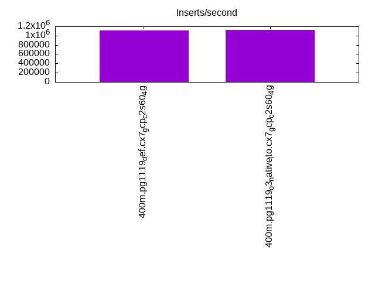
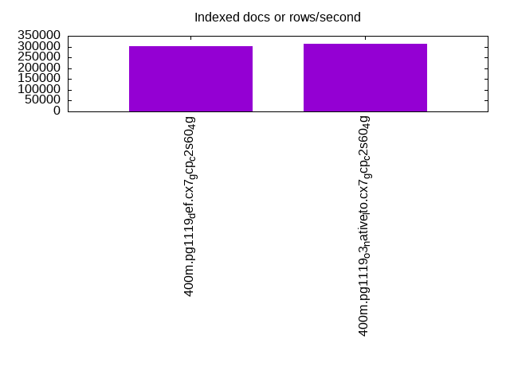
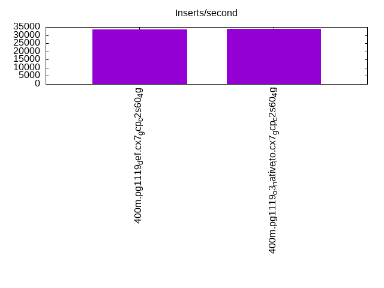
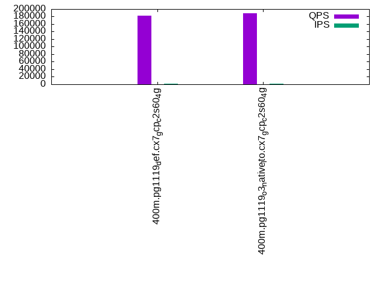
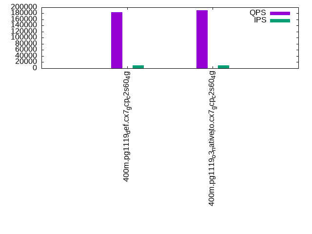
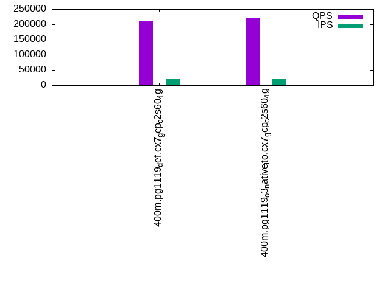

This is a report for the insert benchmark with 400M docs and 20 client(s). It is generated by scripts (bash, awk, sed) and Tufte might not be impressed. An overview of the insert benchmark is here and a short update is here. Below, by DBMS, I mean DBMS+version.config. An example is my8020.c10b40 where my means MySQL, 8020 is version 8.0.20 and c10b40 is the name for the configuration file.
The test server is a c2-standard-60 from GCP with 30 cores, hyperthreading disabled, 240G RAM and 3T from XFS and SW RAID 0 striped over 8 local NVMe drives. The benchmark was run with 20 clients and there were 1 or 2 connections per client (1 for queries, 1 for inserts). The benchmark loads 400M rows without secondary indexes, creates secondary indexes, loads another 400M rows then does 3 read+write tests for one hour each that do queries as fast as possible with 100, 500 and then 1000 writes/second/client concurrent with the queries. Each read-write test runs for 1800 seconds. The test was configured to use one table. The database fits in the OS page cache but not the DBMS buffer pool. Clients and the DBMS share one server. The per-database configs are in the per-database subdirectories here.
The tested DBMS are:
The numbers are inserts/s for l.i0 and l.i1, indexed docs (or rows) /s for l.x and queries/s for q*.2. The values are the average rate over the entire test for inserts (IPS) and queries (QPS). The range of values for IPS and QPS is split into 3 parts: bottom 25%, middle 50%, top 25%. Values in the bottom 25% have a red background, values in the top 25% have a green background and values in the middle have no color. A gray background is used for values that can be ignored because the DBMS did not sustain the target insert rate. Red backgrounds are not used when the minimum value is within 80% of the max value.
| dbms | l.i0 | l.x | l.i1 | q100.1 | q500.1 | q1000.1 |
|---|---|---|---|---|---|---|
| 400m.pg1119_def.cx7_gcp_c2s60_4g | 1111111 | 300601 | 33498 | 182522 | 184600 | 209859 |
| 400m.pg1119_o3_native_lto.cx7_gcp_c2s60_4g | 1129944 | 312090 | 33758 | 188553 | 190603 | 219889 |
This lists the average rate of inserts/s for the tests that do inserts concurrent with queries. For such tests the query rate is listed in the table above. The read+write tests are setup so that the insert rate should match the target rate every second. Cells that are not at least 95% of the target have a red background to indicate a failure to satisfy the target.
| dbms | q100.1 | q500.1 | q1000.1 |
|---|---|---|---|
| pg1119_def.cx7_gcp_c2s60_4g | 1976 | 9885 | 19651 |
| pg1119_o3_native_lto.cx7_gcp_c2s60_4g | 1976 | 9885 | 19683 |
| target | 2000 | 10000 | 20000 |
l.i0: load without secondary indexes. Graphs for performance per 1-second interval are here.
Average throughput:
Insert response time histogram: each cell has the percentage of responses that take <= the time in the header and max is the max response time in seconds. For the max column values in the top 25% of the range have a red background and in the bottom 25% of the range have a green background. The red background is not used when the min value is within 80% of the max value.
| dbms | 256us | 1ms | 4ms | 16ms | 64ms | 256ms | 1s | 4s | 16s | gt | max |
|---|---|---|---|---|---|---|---|---|---|---|---|
| pg1119_def.cx7_gcp_c2s60_4g | 22.857 | 74.322 | 2.740 | 0.035 | 0.033 | 0.013 | 0.629 | ||||
| pg1119_o3_native_lto.cx7_gcp_c2s60_4g | 28.387 | 68.721 | 2.800 | 0.050 | 0.029 | 0.012 | 0.760 |
Performance metrics for the DBMS listed above. Some are normalized by throughput, others are not. Legend for results is here.
ips qps rps rmbps wps wmbps rpq rkbpq wpi wkbpi csps cpups cspq cpupq dbgb1 dbgb2 rss maxop p50 p99 tag 1111111 0 238 2.1 2351.1 469.7 0.000 0.002 0.002 0.433 302950 58.4 0.273 16 44.2 114.2 NA 0.629 61831 10888 400m.pg1119_def.cx7_gcp_c2s60_4g 1129944 0 195 2.1 2368.0 482.6 0.000 0.002 0.002 0.437 336807 58.6 0.298 16 44.2 114.2 NA 0.760 62754 12486 400m.pg1119_o3_native_lto.cx7_gcp_c2s60_4g
l.x: create secondary indexes.
Average throughput:
Performance metrics for the DBMS listed above. Some are normalized by throughput, others are not. Legend for results is here.
ips qps rps rmbps wps wmbps rpq rkbpq wpi wkbpi csps cpups cspq cpupq dbgb1 dbgb2 rss maxop p50 p99 tag 300601 0 1390 39.1 508.3 109.1 0.005 0.133 0.002 0.372 1410 3.4 0.005 3 79.5 150.5 0.0 0.002 NA NA 400m.pg1119_def.cx7_gcp_c2s60_4g 312090 0 2091 44.6 521.2 113.0 0.007 0.146 0.002 0.371 1861 3.4 0.006 3 79.5 152.9 0.0 0.003 NA NA 400m.pg1119_o3_native_lto.cx7_gcp_c2s60_4g
l.i1: continue load after secondary indexes created. Graphs for performance per 1-second interval are here.
Average throughput:
Insert response time histogram: each cell has the percentage of responses that take <= the time in the header and max is the max response time in seconds. For the max column values in the top 25% of the range have a red background and in the bottom 25% of the range have a green background. The red background is not used when the min value is within 80% of the max value.
| dbms | 256us | 1ms | 4ms | 16ms | 64ms | 256ms | 1s | 4s | 16s | gt | max |
|---|---|---|---|---|---|---|---|---|---|---|---|
| pg1119_def.cx7_gcp_c2s60_4g | 0.169 | 6.403 | 88.055 | 5.372 | nonzero | 0.407 | |||||
| pg1119_o3_native_lto.cx7_gcp_c2s60_4g | 0.194 | 6.555 | 87.950 | 5.300 | nonzero | 0.688 |
Performance metrics for the DBMS listed above. Some are normalized by throughput, others are not. Legend for results is here.
ips qps rps rmbps wps wmbps rpq rkbpq wpi wkbpi csps cpups cspq cpupq dbgb1 dbgb2 rss maxop p50 p99 tag 33498 0 70808 655.9 61044.4 592.9 2.114 20.049 1.822 18.126 129039 13.0 3.852 116 176.5 245.0 0.0 0.407 1698 749 400m.pg1119_def.cx7_gcp_c2s60_4g 33758 0 71047 658.0 61534.1 596.1 2.105 19.960 1.823 18.082 130209 12.8 3.857 114 176.4 241.8 0.0 0.688 1698 749 400m.pg1119_o3_native_lto.cx7_gcp_c2s60_4g
q100.1: range queries with 100 insert/s per client. Graphs for performance per 1-second interval are here.
Average throughput:
Query response time histogram: each cell has the percentage of responses that take <= the time in the header and max is the max response time in seconds. For max values in the top 25% of the range have a red background and in the bottom 25% of the range have a green background. The red background is not used when the min value is within 80% of the max value.
| dbms | 256us | 1ms | 4ms | 16ms | 64ms | 256ms | 1s | 4s | 16s | gt | max |
|---|---|---|---|---|---|---|---|---|---|---|---|
| pg1119_def.cx7_gcp_c2s60_4g | 99.892 | 0.104 | 0.002 | 0.001 | nonzero | 0.027 | |||||
| pg1119_o3_native_lto.cx7_gcp_c2s60_4g | 99.912 | 0.085 | 0.002 | 0.001 | nonzero | 0.032 |
Insert response time histogram: each cell has the percentage of responses that take <= the time in the header and max is the max response time in seconds. For max values in the top 25% of the range have a red background and in the bottom 25% of the range have a green background. The red background is not used when the min value is within 80% of the max value.
| dbms | 256us | 1ms | 4ms | 16ms | 64ms | 256ms | 1s | 4s | 16s | gt | max |
|---|---|---|---|---|---|---|---|---|---|---|---|
| pg1119_def.cx7_gcp_c2s60_4g | 0.229 | 99.692 | 0.076 | 0.003 | 0.334 | ||||||
| pg1119_o3_native_lto.cx7_gcp_c2s60_4g | 0.397 | 99.576 | 0.026 | 0.126 |
Performance metrics for the DBMS listed above. Some are normalized by throughput, others are not. Legend for results is here.
ips qps rps rmbps wps wmbps rpq rkbpq wpi wkbpi csps cpups cspq cpupq dbgb1 dbgb2 rss maxop p50 p99 tag 1976 182522 3940 39.7 4026.1 50.8 0.022 0.223 2.038 26.308 653071 63.0 3.578 104 177.6 231.4 0.0 0.027 9126 8774 400m.pg1119_def.cx7_gcp_c2s60_4g 1976 188553 3822 38.4 4026.4 50.5 0.020 0.209 2.038 26.163 674843 63.0 3.579 100 177.6 220.7 0.0 0.032 9338 8970 400m.pg1119_o3_native_lto.cx7_gcp_c2s60_4g
q500.1: range queries with 500 insert/s per client. Graphs for performance per 1-second interval are here.
Average throughput:
Query response time histogram: each cell has the percentage of responses that take <= the time in the header and max is the max response time in seconds. For max values in the top 25% of the range have a red background and in the bottom 25% of the range have a green background. The red background is not used when the min value is within 80% of the max value.
| dbms | 256us | 1ms | 4ms | 16ms | 64ms | 256ms | 1s | 4s | 16s | gt | max |
|---|---|---|---|---|---|---|---|---|---|---|---|
| pg1119_def.cx7_gcp_c2s60_4g | 99.607 | 0.381 | 0.012 | 0.001 | nonzero | 0.030 | |||||
| pg1119_o3_native_lto.cx7_gcp_c2s60_4g | 99.645 | 0.343 | 0.011 | 0.001 | nonzero | 0.028 |
Insert response time histogram: each cell has the percentage of responses that take <= the time in the header and max is the max response time in seconds. For max values in the top 25% of the range have a red background and in the bottom 25% of the range have a green background. The red background is not used when the min value is within 80% of the max value.
| dbms | 256us | 1ms | 4ms | 16ms | 64ms | 256ms | 1s | 4s | 16s | gt | max |
|---|---|---|---|---|---|---|---|---|---|---|---|
| pg1119_def.cx7_gcp_c2s60_4g | 0.179 | 99.736 | 0.081 | 0.004 | 0.292 | ||||||
| pg1119_o3_native_lto.cx7_gcp_c2s60_4g | 0.357 | 99.568 | 0.075 | 0.254 |
Performance metrics for the DBMS listed above. Some are normalized by throughput, others are not. Legend for results is here.
ips qps rps rmbps wps wmbps rpq rkbpq wpi wkbpi csps cpups cspq cpupq dbgb1 dbgb2 rss maxop p50 p99 tag 9885 184600 18499 187.8 19910.3 211.2 0.100 1.042 2.014 21.878 639870 65.9 3.466 107 183.7 230.0 0.0 0.030 9130 8535 400m.pg1119_def.cx7_gcp_c2s60_4g 9885 190603 18171 186.0 19877.3 210.6 0.095 1.000 2.011 21.821 661225 65.8 3.469 104 183.7 226.3 0.0 0.028 9450 8842 400m.pg1119_o3_native_lto.cx7_gcp_c2s60_4g
q1000.1: range queries with 1000 insert/s per client. Graphs for performance per 1-second interval are here.
Average throughput:
Query response time histogram: each cell has the percentage of responses that take <= the time in the header and max is the max response time in seconds. For max values in the top 25% of the range have a red background and in the bottom 25% of the range have a green background. The red background is not used when the min value is within 80% of the max value.
| dbms | 256us | 1ms | 4ms | 16ms | 64ms | 256ms | 1s | 4s | 16s | gt | max |
|---|---|---|---|---|---|---|---|---|---|---|---|
| pg1119_def.cx7_gcp_c2s60_4g | 99.389 | 0.587 | 0.022 | 0.002 | nonzero | 0.040 | |||||
| pg1119_o3_native_lto.cx7_gcp_c2s60_4g | 99.426 | 0.551 | 0.022 | 0.002 | nonzero | 0.042 |
Insert response time histogram: each cell has the percentage of responses that take <= the time in the header and max is the max response time in seconds. For max values in the top 25% of the range have a red background and in the bottom 25% of the range have a green background. The red background is not used when the min value is within 80% of the max value.
| dbms | 256us | 1ms | 4ms | 16ms | 64ms | 256ms | 1s | 4s | 16s | gt | max |
|---|---|---|---|---|---|---|---|---|---|---|---|
| pg1119_def.cx7_gcp_c2s60_4g | 0.878 | 93.685 | 5.437 | nonzero | 0.258 | ||||||
| pg1119_o3_native_lto.cx7_gcp_c2s60_4g | 1.098 | 93.540 | 5.362 | nonzero | 0.285 |
Performance metrics for the DBMS listed above. Some are normalized by throughput, others are not. Legend for results is here.
ips qps rps rmbps wps wmbps rpq rkbpq wpi wkbpi csps cpups cspq cpupq dbgb1 dbgb2 rss maxop p50 p99 tag 19651 209859 38002 386.0 37710.9 397.6 0.181 1.883 1.919 20.721 649083 70.1 3.093 100 197.2 256.4 0.0 0.040 10509 7931 400m.pg1119_def.cx7_gcp_c2s60_4g 19683 219889 37761 383.2 37891.8 401.6 0.172 1.785 1.925 20.894 677985 70.0 3.083 96 197.2 256.7 0.0 0.042 11028 8075 400m.pg1119_o3_native_lto.cx7_gcp_c2s60_4g
l.i0: load without secondary indexes
Performance metrics for all DBMS, not just the ones listed above. Some are normalized by throughput, others are not. Legend for results is here.
ips qps rps rmbps wps wmbps rpq rkbpq wpi wkbpi csps cpups cspq cpupq dbgb1 dbgb2 rss maxop p50 p99 tag 1111111 0 238 2.1 2351.1 469.7 0.000 0.002 0.002 0.433 302950 58.4 0.273 16 44.2 114.2 NA 0.629 61831 10888 400m.pg1119_def.cx7_gcp_c2s60_4g 1129944 0 195 2.1 2368.0 482.6 0.000 0.002 0.002 0.437 336807 58.6 0.298 16 44.2 114.2 NA 0.760 62754 12486 400m.pg1119_o3_native_lto.cx7_gcp_c2s60_4g
l.x: create secondary indexes
Performance metrics for all DBMS, not just the ones listed above. Some are normalized by throughput, others are not. Legend for results is here.
ips qps rps rmbps wps wmbps rpq rkbpq wpi wkbpi csps cpups cspq cpupq dbgb1 dbgb2 rss maxop p50 p99 tag 300601 0 1390 39.1 508.3 109.1 0.005 0.133 0.002 0.372 1410 3.4 0.005 3 79.5 150.5 0.0 0.002 NA NA 400m.pg1119_def.cx7_gcp_c2s60_4g 312090 0 2091 44.6 521.2 113.0 0.007 0.146 0.002 0.371 1861 3.4 0.006 3 79.5 152.9 0.0 0.003 NA NA 400m.pg1119_o3_native_lto.cx7_gcp_c2s60_4g
l.i1: continue load after secondary indexes created
Performance metrics for all DBMS, not just the ones listed above. Some are normalized by throughput, others are not. Legend for results is here.
ips qps rps rmbps wps wmbps rpq rkbpq wpi wkbpi csps cpups cspq cpupq dbgb1 dbgb2 rss maxop p50 p99 tag 33498 0 70808 655.9 61044.4 592.9 2.114 20.049 1.822 18.126 129039 13.0 3.852 116 176.5 245.0 0.0 0.407 1698 749 400m.pg1119_def.cx7_gcp_c2s60_4g 33758 0 71047 658.0 61534.1 596.1 2.105 19.960 1.823 18.082 130209 12.8 3.857 114 176.4 241.8 0.0 0.688 1698 749 400m.pg1119_o3_native_lto.cx7_gcp_c2s60_4g
q100.1: range queries with 100 insert/s per client
Performance metrics for all DBMS, not just the ones listed above. Some are normalized by throughput, others are not. Legend for results is here.
ips qps rps rmbps wps wmbps rpq rkbpq wpi wkbpi csps cpups cspq cpupq dbgb1 dbgb2 rss maxop p50 p99 tag 1976 182522 3940 39.7 4026.1 50.8 0.022 0.223 2.038 26.308 653071 63.0 3.578 104 177.6 231.4 0.0 0.027 9126 8774 400m.pg1119_def.cx7_gcp_c2s60_4g 1976 188553 3822 38.4 4026.4 50.5 0.020 0.209 2.038 26.163 674843 63.0 3.579 100 177.6 220.7 0.0 0.032 9338 8970 400m.pg1119_o3_native_lto.cx7_gcp_c2s60_4g
q500.1: range queries with 500 insert/s per client
Performance metrics for all DBMS, not just the ones listed above. Some are normalized by throughput, others are not. Legend for results is here.
ips qps rps rmbps wps wmbps rpq rkbpq wpi wkbpi csps cpups cspq cpupq dbgb1 dbgb2 rss maxop p50 p99 tag 9885 184600 18499 187.8 19910.3 211.2 0.100 1.042 2.014 21.878 639870 65.9 3.466 107 183.7 230.0 0.0 0.030 9130 8535 400m.pg1119_def.cx7_gcp_c2s60_4g 9885 190603 18171 186.0 19877.3 210.6 0.095 1.000 2.011 21.821 661225 65.8 3.469 104 183.7 226.3 0.0 0.028 9450 8842 400m.pg1119_o3_native_lto.cx7_gcp_c2s60_4g
q1000.1: range queries with 1000 insert/s per client
Performance metrics for all DBMS, not just the ones listed above. Some are normalized by throughput, others are not. Legend for results is here.
ips qps rps rmbps wps wmbps rpq rkbpq wpi wkbpi csps cpups cspq cpupq dbgb1 dbgb2 rss maxop p50 p99 tag 19651 209859 38002 386.0 37710.9 397.6 0.181 1.883 1.919 20.721 649083 70.1 3.093 100 197.2 256.4 0.0 0.040 10509 7931 400m.pg1119_def.cx7_gcp_c2s60_4g 19683 219889 37761 383.2 37891.8 401.6 0.172 1.785 1.925 20.894 677985 70.0 3.083 96 197.2 256.7 0.0 0.042 11028 8075 400m.pg1119_o3_native_lto.cx7_gcp_c2s60_4g
Insert response time histogram
256us 1ms 4ms 16ms 64ms 256ms 1s 4s 16s gt max tag 0.000 22.857 74.322 2.740 0.035 0.033 0.013 0.000 0.000 0.000 0.629 pg1119_def.cx7_gcp_c2s60_4g 0.000 28.387 68.721 2.800 0.050 0.029 0.012 0.000 0.000 0.000 0.760 pg1119_o3_native_lto.cx7_gcp_c2s60_4g
TODO - determine whether there is data for create index response time
Insert response time histogram
256us 1ms 4ms 16ms 64ms 256ms 1s 4s 16s gt max tag 0.000 0.000 0.169 6.403 88.055 5.372 nonzero 0.000 0.000 0.000 0.407 pg1119_def.cx7_gcp_c2s60_4g 0.000 0.000 0.194 6.555 87.950 5.300 nonzero 0.000 0.000 0.000 0.688 pg1119_o3_native_lto.cx7_gcp_c2s60_4g
Query response time histogram
256us 1ms 4ms 16ms 64ms 256ms 1s 4s 16s gt max tag 99.892 0.104 0.002 0.001 nonzero 0.000 0.000 0.000 0.000 0.000 0.027 pg1119_def.cx7_gcp_c2s60_4g 99.912 0.085 0.002 0.001 nonzero 0.000 0.000 0.000 0.000 0.000 0.032 pg1119_o3_native_lto.cx7_gcp_c2s60_4g
Insert response time histogram
256us 1ms 4ms 16ms 64ms 256ms 1s 4s 16s gt max tag 0.000 0.000 0.000 0.229 99.692 0.076 0.003 0.000 0.000 0.000 0.334 pg1119_def.cx7_gcp_c2s60_4g 0.000 0.000 0.000 0.397 99.576 0.026 0.000 0.000 0.000 0.000 0.126 pg1119_o3_native_lto.cx7_gcp_c2s60_4g
Query response time histogram
256us 1ms 4ms 16ms 64ms 256ms 1s 4s 16s gt max tag 99.607 0.381 0.012 0.001 nonzero 0.000 0.000 0.000 0.000 0.000 0.030 pg1119_def.cx7_gcp_c2s60_4g 99.645 0.343 0.011 0.001 nonzero 0.000 0.000 0.000 0.000 0.000 0.028 pg1119_o3_native_lto.cx7_gcp_c2s60_4g
Insert response time histogram
256us 1ms 4ms 16ms 64ms 256ms 1s 4s 16s gt max tag 0.000 0.000 0.000 0.179 99.736 0.081 0.004 0.000 0.000 0.000 0.292 pg1119_def.cx7_gcp_c2s60_4g 0.000 0.000 0.000 0.357 99.568 0.075 0.000 0.000 0.000 0.000 0.254 pg1119_o3_native_lto.cx7_gcp_c2s60_4g
Query response time histogram
256us 1ms 4ms 16ms 64ms 256ms 1s 4s 16s gt max tag 99.389 0.587 0.022 0.002 nonzero 0.000 0.000 0.000 0.000 0.000 0.040 pg1119_def.cx7_gcp_c2s60_4g 99.426 0.551 0.022 0.002 nonzero 0.000 0.000 0.000 0.000 0.000 0.042 pg1119_o3_native_lto.cx7_gcp_c2s60_4g
Insert response time histogram
256us 1ms 4ms 16ms 64ms 256ms 1s 4s 16s gt max tag 0.000 0.000 0.000 0.878 93.685 5.437 nonzero 0.000 0.000 0.000 0.258 pg1119_def.cx7_gcp_c2s60_4g 0.000 0.000 0.000 1.098 93.540 5.362 nonzero 0.000 0.000 0.000 0.285 pg1119_o3_native_lto.cx7_gcp_c2s60_4g